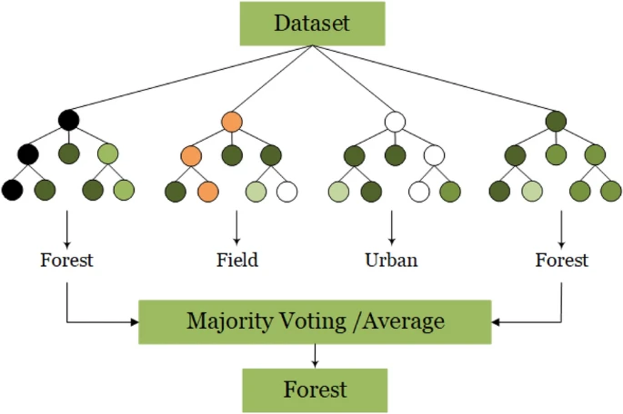
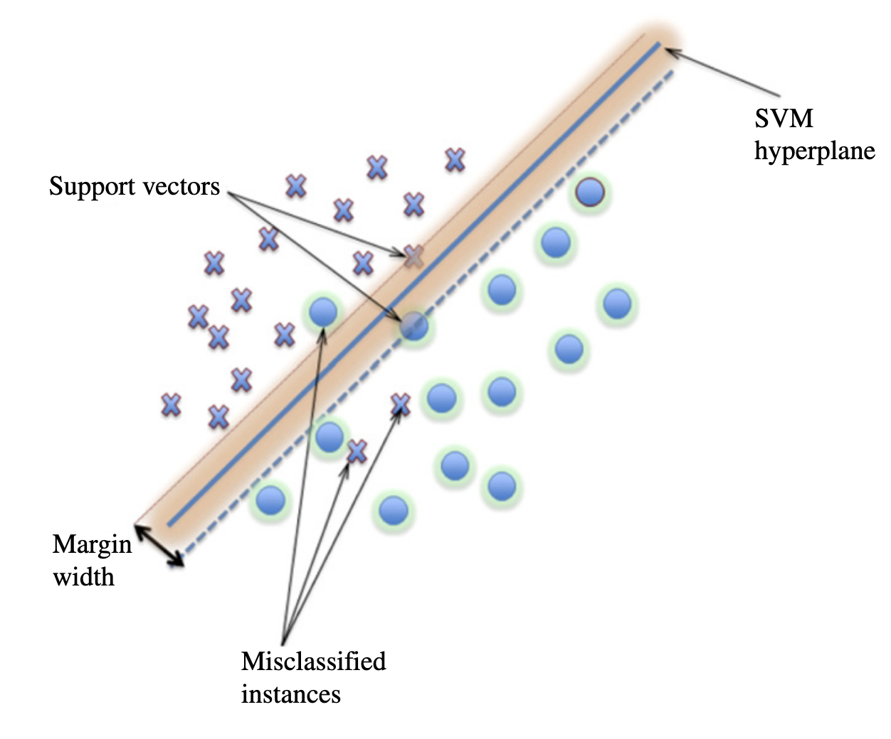

6 Classification
6.1 Summary
This week,we focused on various machine learning techniques applied to remote sensing data. The focus was on classification, the process of categorising pixels into meaningful thematic classes (such as water, forest, urban, etc.) – and, to a lesser extent, regression methods. We explored both unsupervised and supervised approaches:
Unsupervised Methods: Techniques like K-means or DBSCAN clustering enable us to group pixels based on spectral similarity when class labels are unknown. These methods can reveal inherent patterns, although they may lack the precision of supervised approaches.
Supervised Classification: Here, we train models on labelled examples. In our practical session, I manually created a training dataset by drawing polygons over different land cover types, and then applied a Random Forest classifier to produce a land cover map.
Decision Trees & Regression Trees: These models segment the data using a series of if-else conditions, creating a hierarchical tree-like structure. They utilise metrics such as Gini impurity (for classification) or variance reduction (for regression) to decide the best splits at each node. The goal is to create splits that maximize the homogeneity of the resulting subsets. While decision trees categorise data into classes (e.g., forest, water, urban), regression trees are used for predicting continuous outcomes (e.g., biomass, temperature). A key advantage of decision trees is their interpretability; the decision rules are easily visualised and understood. A common challenge with these trees is overfitting, which can be mitigated by pruning less informative branches, limiting the tree depth, or setting a minimum number of samples required at each leaf node. Pruning involves removing branches that do not significantly improve the model’s performance on a validation dataset.
Random Forests: This method builds many decision trees. Each tree is made using a random sample of the data and a random subset of the available features. This randomness makes the trees different from each other. When predicting, each tree makes its own prediction. For classification, the final prediction is the one chosen by most trees (like voting). For regression, the final prediction is the average of all the trees’ predictions. Combining many different trees in this way makes random forests more accurate and less likely to overfit compared to a single decision tree. The randomness helps to make the trees independent, leading to a better overall model.

- Support Vector Machines (SVM): Support Vector Machines offer a distinct approach to classification. Instead of methods like decision trees, SVMs operate by identifying an optimal boundary, called a hyperplane, within a multi-dimensional space representing the different features. This hyperplane is positioned to best separate different classes of data. If the data cannot be separated cleanly by a straight line (or a flat plane in higher dimensions), SVMs can employ kernel functions. These functions transform the data into a higher-dimensional space where linear separation becomes possible, effectively allowing for non-linear decision boundaries in the original feature space.

6.2 Applications
Unsupervised approaches, particularly valuable when labeled training data is scarce, provide crucial initial insights into land cover change and anomaly detection. For instance, Lv et al. (2019) combined K-means clustering with adaptive majority voting for change detection, achieving 92.3% accuracy in identifying urban expansion from bitemporal Landsat imagery, outperforming traditional PCA. Similarly, Artés et al. (2019) used DBSCAN for global wildfire analysis, revealing critical fire regime patterns and identifying 23% more true fire clusters than threshold-based methods. This, combined with temporal analysis of MODIS data, differentiated agricultural burns from uncontrolled wildfires, demonstrating how unsupervised methods provide foundational understanding before more resource-intensive supervised techniques are applied.
Supervised learning techniques, particularly Random Forest (RF), have become dominant in land cover change studies due to their ability to handle noisy satellite data and large datasets. For example, RF has been used for mapping urban growth with high accuracy, as demonstrated by Frimpong et al. (2021)’s study of Kumasi, and for tracking deforestation by combining Landsat and Sentinel-2 data, as shown by Sun & Yordanov (2020). While RF excels in capturing complex dynamics like wetland hydrology (Zhang et al., 2024), Support Vector Machines (SVMs) can outperform RF in distinguishing fine urban features due to their ability to capture subtle spectral differences (Dabija et al., 2021).
Hybrid approaches are increasingly being used to leverage the strengths of different classifiers. These approaches combine techniques like SVM and object-based analysis for urban green space mapping (Kranjčić et al., 2019) or integrate RF with SVM for improved crop monitoring (Wei et al., 2023). This trend suggests a move towards a combined paradigm where unsupervised methods initially segment data, supervised classifiers add labels, and ensemble methods handle remaining uncertainties.
6.3 Reflection
I found the exploration of classification techniques challenging but also really interesting and thought-provoking. Learning about decision trees, their susceptibility to overfitting, and how ensemble methods like random forests can overcome these issues provided a deeper understanding of model behaviour. The contrast between traditional methods and modern approaches, such as SVMs and deep learning.
Was also interesting to remember that while advanced models are appealing, classical or more simple techniques remain highly effective for many remote sensing applications – and often at a much lower computational cost. This made me reflect on the critical role of domain expertise. Sometimes, with sufficient understanding of the specific data and the phenomena being studied, simpler, less computationally intensive methods might not only be sufficient but could even yield more accurate or interpretable results. We might get lost in the complexities of ML, overlooking the potential of a well-informed, simpler approach.
This week has not only built my technical skills in applying machine learning to raster data but also reinforced the critical importance of domain knowledge and I’m excited to further explore these methods in real-world scenarios.